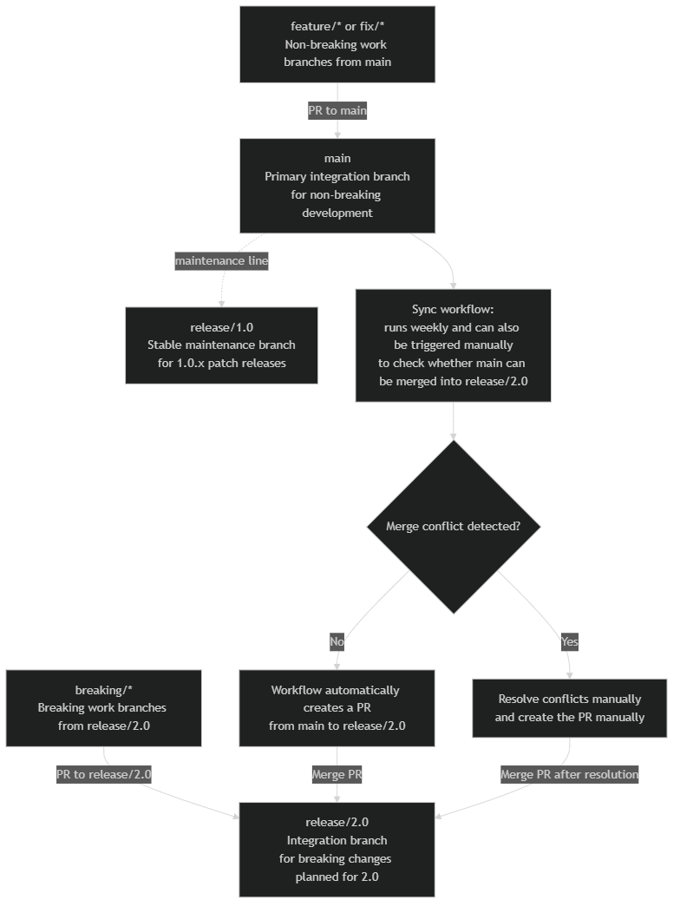
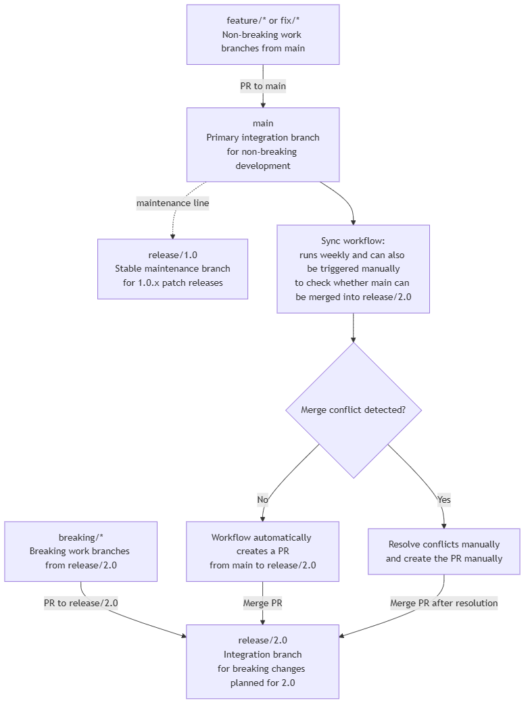

Developer notes#
This section provides additional guidance for developers contributing to PyAEDT, including information about working with Testmon, tracking coverage, and handling edge cases during development.
Tracking coverage locally#
Due to limitations with Testmon and coverage tracking in the CI/CD pipeline, developers must track test coverage locally before submitting pull requests. While the CI/CD uses Testmon to selectively run affected tests for faster feedback, coverage is only tracked comprehensively during nightly runs.
Why track coverage locally?#
CI limitation: Testmon’s selective test execution means only tests affected by your changes run in the PR workflow, which doesn’t provide complete coverage metrics for your changes.
Nightly validation: Full coverage is checked nightly to ensure overall project health.
Your responsibility: Contributors must verify that new code has adequate coverage (minimum 85% for all new code) before submitting PRs.
Running tests with coverage locally#
To measure coverage for your changes, run pytest with coverage tracking. You can use either your IDE’s built-in coverage tools or the command line.
Using pytest-cov (command line):
Install pytest-cov if not already installed:
pip install pytest-cov
Run tests with coverage for the specific test suites related to your changes:
# For unit tests pytest tests/unit --cov=ansys.aedt.core --cov-report=term-missing --cov-report=html # For system tests pytest tests/system --cov=ansys.aedt.core --cov-report=term-missing --cov-report=html
Review the coverage report:
Terminal output: Shows coverage percentage and lists uncovered lines with
--cov-report=term-missingHTML report: Open
htmlcov/index.htmlin a browser for detailed, navigable coverage information
Using VSCode:
Install the Python extension if not already installed.
Open the Testing sidebar (beaker icon).
Click “Run Test with Coverage” button in the Test Explorer toolbar.
After tests complete, view:
Coverage summary in the Test Explorer (percentage by file)
Highlighted covered/uncovered lines in the editor
Using PyCharm:
Configure pytest as the test runner: Settings → Tools → Python Integrated Tools → Default test runner → pytest
Right-click a test file or configuration and choose Run with Coverage.
View coverage summary and highlighted lines in the editor.
Best practices for coverage tracking#
Run coverage before pushing: Always check coverage locally before pushing your changes.
Target 85% minimum: Ensure new code has at least 85% test coverage.
Focus on relevant tests: Run coverage for the specific modules you’ve modified rather than the entire test suite.
Use HTML reports: The HTML coverage report (
htmlcov/index.html) provides the most detailed view of what’s covered.Test both unit and system: Depending on your changes, run coverage for both unit and system tests to ensure comprehensive coverage.
Isolate your changes: To see coverage specifically for your modifications, run tests only for the modules you’ve changed.
Testmon considerations#
When direct or transitive test dependencies change (in the uv.lock file), the CI pipeline triggers a full Testmon run to refresh .testmondata caches.
This is necessary to ensure that the dependency graph is accurate and that affected tests are correctly identified.
Edge cases and considerations#
This section covers common edge cases and considerations when working with PyAEDT’s CI/CD pipeline and Testmon integration.
Multiple open pull requests#
When multiple PRs are open simultaneously, each PR:
Restores the same baseline cache from
main.Runs only tests affected by its own changes.
Does not interfere with other PRs since no PR modifies the shared cache.
This design ensures isolation between concurrent PR workflows.
Cache update in progress while PR runs#
If a PR workflow starts while the update-testmondata-cache.yml workflow is running on main:
The PR workflow waits for up to 10 minutes for the cache update to complete.
If the cache update succeeds, the PR uses the fresh cache.
If the cache update fails or times out, the PR workflow fails with an error message instructing the user to relaunch the cache update workflow.
This mechanism prevents PRs from running with stale or inconsistent cache data.
Cache update workflow fails#
If the update-testmondata-cache.yml workflow fails:
Subsequent PRs fail at the “Wait for master cache update” step.
The error message directs users to relaunch the workflow at:
https://github.com/ansys/pyaedt/actions/workflows/update-testmondata-cache.ymlOnce the cache update completes successfully, PR workflows can proceed.
Skipped tests transitioning to enabled#
When a test is skipped on main (for example via pytest.mark.skip or pytest.mark.skipif) and
the PR enables it by removing or modifying the skip condition, Testmon may not correctly handle
the transition. This can lead to the newly enabled test never running in CI, causing unexpected
failures or missed coverage.
Warning
If your PR enables previously skipped tests, Testmon may silently skip running them. Always verify and force that the newly enabled tests are executed and pass before merging.
A real-world example of this issue causing a CI failure can be found in PR #7465.
Pruning Testmon caches#
A separate workflow (prune-testmon-caches.yml) can be manually triggered to delete all Testmon
caches. This is useful when:
Cache corruption is suspected.
A major refactoring requires rebuilding the dependency graph from scratch.
Cache storage limits are approached.
Keeping PRs updated with main#
Important
PRs must be updated to the latest ``main`` branch before merging.
This requirement ensures that:
Cache consistency: The pull request’s Testmon run is validated against the same codebase state that the cache was built from. If a PR is behind
main, its Testmon data may not accurately reflect which tests need to run.Merge conflicts: Updating ensures merge conflicts are resolved before merging.
Test coverage: Tests that were added or modified in
mainsince the PR was created are executed against the pull request’s changes.
How to update your PR#
Use one of the following methods to update your PR with the latest main branch:
Command line:
git fetch origin main
git merge main
# Resolve any conflicts if they occur
git push
GitHub UI:
Use the “Update branch” button if available on your pull request page.
Note
Always verify that your tests still pass and coverage remains adequate after updating your branch.
Branching strategy since PyAEDT 1.0#
This section describes the new branching model used starting from the 1.0.
All developers contributing to PyAEDT are expected to be familiar with this branching strategy before creating branches or opening pull requests.
Using the correct base branch is required to keep release stable.
Overview#
PyAEDT uses three core branches with different purposes:
main:
Primary integration branch for ongoing non-breaking development.
Feature/fix branches for backward-compatible work should branch from
main.
release/1.0:
Stable maintenance branch for the
1.0.xpatch series.Patch releases for 1.0 are created from this branch.
release/2.0:
Integration branch for breaking changes planned for 2.0.
Any branch introducing breaking behavior must branch from
release/2.0.
Overview#
Determine whether the change is breaking.
Create your feature branch from the correct base branch:
Non-breaking: from
mainBreaking: from
release/2.0
Open a pull request targeting the same base branch.
Examples#
Bug fix that keeps API compatibility:
Branch from
main, PR tomain.
API rename/removal:
Branch from
release/2.0, PR torelease/2.0.
Notes#
When in doubt, open a draft PR and request maintainers’ guidance before implementation is finalized.
Branching schema#
The diagram below summarizes how branches are used and how work should flow.


- CI/CD automation:
A workflow checks whether
maincan be merged intorelease/2.0on a weekly schedule.Anyone can also trigger the workflow manually to verify whether the merge can be performed cleanly.
If there is no conflict, the workflow automatically creates a pull request targeting
release/2.0.If there is a conflict, the conflict must be resolved manually and the pull request must also be created manually.